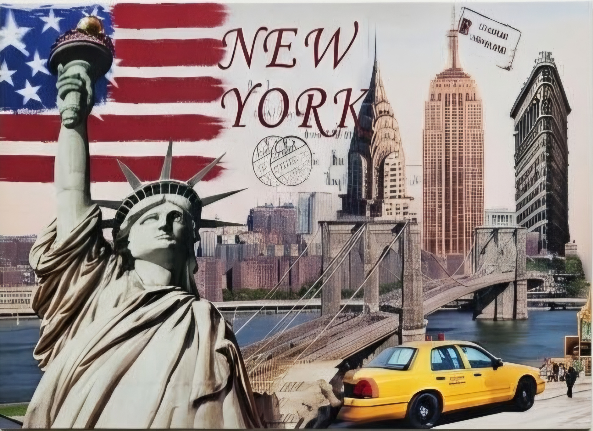

Manhattan, New York - 23/07/2026 Anh đưa em đến Manhattan, nơi cổ điển giao thoa với hiện đại. Bắt đầu tại Lower Manhattan với World Trade Center, "phi thuyền" Oculus ngập tràn ánh sáng, Phố Wall sầm uất, cùng Tòa án Liên bang và Tòa Thị chính uy nghi. Hành trình tiếp nối với những biểu tượng kiến trúc mãn nhãn: Cầu Brooklyn lộng gió mà anh nắm chặt tay em, nhà ga Moynihan Train Hall lộng lẫy, nhà thờ Gothic St. Patrick cổ kính nép mình giữa rừng cao ốc, và Trung tâm Rockefeller mang phong cách tài phiệt. Khi thành phố lên đèn, nép vào vai anh giữa Grand Central tấp nập và hòa chung biển người đông vui tại Times Square rực rỡ. New York thực sự là thành phố không bao giờ ngủ! Tạm biệt New York hoa lệ! ✌️
Click the edges of the postcard to flip.
(Clicking the text fields or barcode will not flip the card so you can interact with them!)